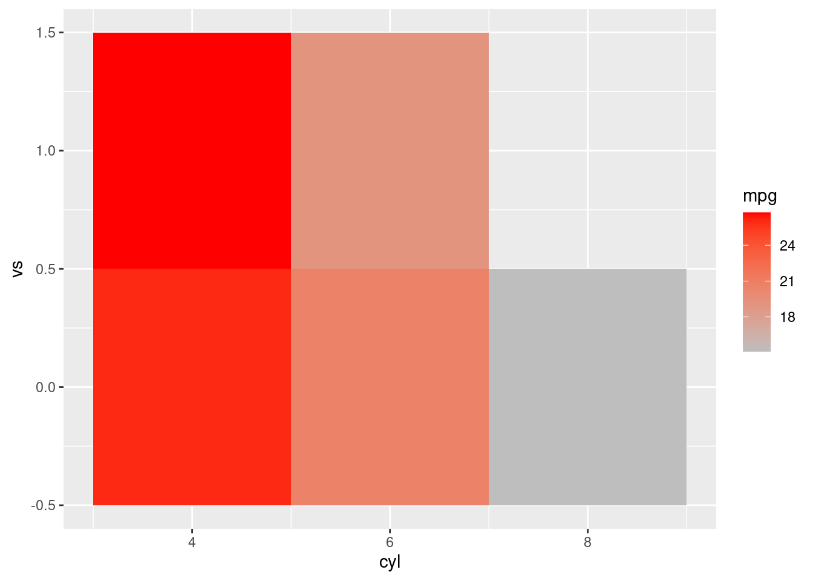
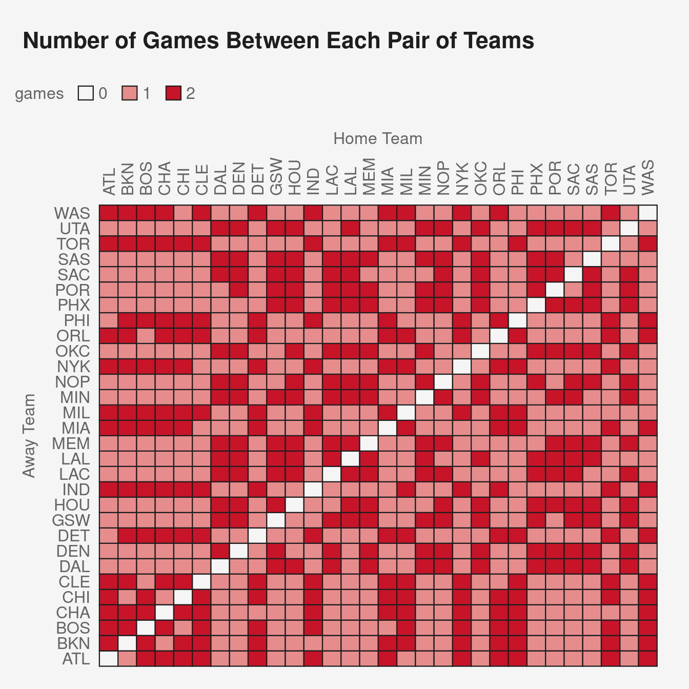

1.2 Other preparation
1.2.1 Bookmarks
Bookmark these pages:
These notes https://bmacgtpm.github.io/notes/
The Github page for these notes https://github.com/bmacGTPM/notes. If you want to work with the R Markdown versions of these notes, you can find them in that GitHub repo. You can also ask questions, and create pull requests to add content or fix typos. In the main folder, there are several Rmd files:
index.Rmd. This is the first Rmd file and corresponds to the first section of the Notes https://bmacgtpm.github.io/notes/All other
Rmdfiles are numbered and appear in the Notes in the same order as theRmdfiles. For example, theRmdfiles for thedplyrandggplotsections in the Appendix are99-01-appendix-dplyr.Rmd99-02-appendix-ggplot.Rmd
The
pubthemeGithub page https://github.com/bmacGTPM/pubthemeThese books
- Beyond Multiple Linear Regression https://bookdown.org/roback/bookdown-BeyondMLR/
- Regression and Other Stories https://avehtari.github.io/ROS-Examples/
- Introduction to Statistical Learning https://www.statlearning.com/
These resources
1.2.2 Backing up work
Most of your coding should take place in a source file or R Markdown file. Very little coding should occur in the console. This will make it far easier to reproduce what you did and back up your work.
There are a couple of options for backing up your work
- Use a cloud service like OneDrive, Google Drive, Dropbox, Box, iCloud, or use Time Machine, to automatically back up your files.
- If you are using Git/Github as part of your typical workflow (recommended), you’ll have a copy of your code in the “cloud” every time you push to Github.
- Manually backup your files to an external hard drive on a regular basis.
1.2.3 Test code often
Test your code by running your script or knitting your R Markdown file often. This will help you catch errors early and it will likely make it easier to troubleshoot the errors.
1.2.4 dplyr and ggplot2
If you are unfamiliar with tidyverse and specifically the packages dplyr and ggplot2, there are two sections in the Appendix that are quick intros of dplyr and ggplot2:
- https://bmacgtpm.github.io/notes/data-exploration-with-dplyr.html
- https://bmacgtpm.github.io/notes/data-visualization-with-ggplot.html
The end of those sections contain links to more in-depth resources.
1.2.5 Minimal reproducible examples
When asking someone for help in an email, on Slack, on Github, on a discussion board (e.g. stackoverflow.com), etc., use a minimal reproducible example.
- Minimal: Use as little code as necessary that still results in the error
- Reproducible: provide all code and data necessary so that someone can copy/paste and reproduce the problem on their own machine.
A minimal reproducible example makes it easier for someone to help you, and makes it easier to troubleshoot your own code. It might help an LLM help you also (I haven’t tried this yet).
Here is the Stack Overflow page on the topic: https://stackoverflow.com/help/minimal-reproducible-example
Here is an example. Suppose you are working on using game results data to create a schedule matrix and have this code:
Code
library(pubtheme)
library(scales)
library(tidyverse)
d = readRDS('data/games.rds')
dg = d %>%
filter(lg == 'nba',
season %in% 2022,
season.type == 'reg') %>%
group_by(away,
home,
season) %>%
summarise(games = n()) %>%
ungroup() %>%
complete(away,
home,
fill = list(games = 0))
head(dg)
title = "Number of Games Between Each Pair of Teams"
g = ggplot(dg,
aes(x = home,
y = away,
fill = games))+
geom_tile(linewidth = 0.4,
show.legend = T,
color = pubdarkgray) + ## used char above so leg is discrete
scale_fill_manual(values = c(pubbackgray,
publightred,
pubred)) +
labs(title = title,
x = 'Home Team',
y = 'Away Team')
g %>%
pub(type = 'grid') +
theme(axis.text.x.top = element_text(angle = 90,
vjust = .5,
hjust = 0))This results in the error Error: Continuous value supplied to discrete scale. Suppose we want help on this error. If the person we are asking has the games.rds data, then we can start stripping down the ggplot code as much as possible until we still have the error. Most lines of code can be removed because they are unrelated to the error. You can start commenting out one line at a time. This still gives the same error:
Code
title = "Number of Games Between Each Pair of Teams"
g = ggplot(dg,
aes(x = home,
y = away,
fill = games))+
geom_tile(linewidth = 0.4,
show.legend = T,
color = pubdarkgray) +
scale_fill_manual(values = c(pubbackgray,
publightred,
pubred)) #+
# labs(title = title,
# x = 'Home Team',
# y = 'Away Team')
# g %>%
# pub(type = 'grid') +
# theme(axis.text.x.top = element_text(angle = 90,
# vjust = .5,
# hjust = 0))
gSo we can delete those lines of code. If we remove scale_fill_manual the error goes away, so we have to keep that in.
Code
g = ggplot(dg,
aes(x = home,
y = away,
fill = games))+
geom_tile(linewidth = 0.4,
show.legend = T,
color = pubdarkgray) +
scale_fill_manual(values = c(pubbackgray,
publightred,
pubred))
gWe can also try getting rid of some of the arguments, like linewidth, show.legend, color, and we still get the error. Also, we can change the colors pubbackgray, publightred, and pubred to 'gray’, 'lightpink', and 'red' which come with R and don’t require the pubtheme package.
Code
g = ggplot(dg,
aes(x = home,
y = away,
fill = games))+
geom_tile() +
scale_fill_manual(values = c('gray',
'lightpink',
'red'))
gThat is about all we can remove and still get the error. So if the person we are asking the question to has this data, they can copy/paste this code to their own computer and reproduce the error.
If the person we are asking doesn’t have the data, then we should use a widely available data set. The mtcars data is available to anyone with R and can be used here.
Code
head(mtcars) mpg cyl disp hp drat wt qsec vs am gear carb
Mazda RX4 21.0 6 160 110 3.90 2.620 16.46 0 1 4 4
Mazda RX4 Wag 21.0 6 160 110 3.90 2.875 17.02 0 1 4 4
Datsun 710 22.8 4 108 93 3.85 2.320 18.61 1 1 4 1
Hornet 4 Drive 21.4 6 258 110 3.08 3.215 19.44 1 0 3 1
Hornet Sportabout 18.7 8 360 175 3.15 3.440 17.02 0 0 3 2
Valiant 18.1 6 225 105 2.76 3.460 20.22 1 0 3 1Code
library(tidyverse)
dg = mtcars %>%
group_by(cyl, vs) %>%
summarise(mpg = mean(mpg),
.groups = 'keep')
head(dg)
g = ggplot(dg, aes(x = cyl,
y = vs,
fill = mpg))+
geom_tile() +
scale_fill_manual(values = c('gray',
'lightpink',
'red'))
gAnyone, regardless of whether they have your data set, can copy/paste this code to diagnose. They will hopefully notice that mpg, the variable chosen to fill by, is continuous, while scale_fill_manual applies to discrete color scales. You’d have to use a continuous color scale with the continuous variable mpg. Something like this works:
Code
library(tidyverse)
dg = mtcars %>%
group_by(cyl, vs) %>%
summarise(mpg = mean(mpg),
.groups = 'keep')
head(dg)# A tibble: 5 × 3
# Groups: cyl, vs [5]
cyl vs mpg
<dbl> <dbl> <dbl>
1 4 0 26
2 4 1 26.7
3 6 0 20.6
4 6 1 19.1
5 8 0 15.1Code
g = ggplot(dg,
aes(x = cyl,
y = vs,
fill = mpg))+
geom_tile() +
scale_fill_gradient(low = 'gray',
high = 'red')
g
Now that we know how we can fix the error, let’s go back to our original plot and replace scale_fill_manual with scale_fill_gradient.
Code
d = readRDS('data/games.rds')
dg = d %>%
filter(lg == 'nba',
season %in% 2022,
season.type == 'reg') %>%
group_by(away,
home,
season) %>%
summarise(games = n()) %>%
ungroup() %>%
complete(away,
home,
fill = list(games = 0))
head(dg)# A tibble: 6 × 4
away home season games
<chr> <chr> <chr> <int>
1 ATL ATL <NA> 0
2 ATL BKN 2022 1
3 ATL BOS 2022 2
4 ATL CHA 2022 2
5 ATL CHI 2022 2
6 ATL CLE 2022 2Code
title = "Number of Games Between Each Pair of Teams"
g = ggplot(dg,
aes(x = home,
y = away,
fill = games))+
geom_tile(linewidth = 0.4,
show.legend = T,
color = pubdarkgray) +
scale_fill_gradient(low = pubbackgray,
high = pubred) +
labs(title = title,
x = 'Home Team',
y = 'Away Team')
g %>%
pub(type = 'grid') +
theme(axis.text.x.top = element_text(angle = 90,
vjust = .5,
hjust = 0))
Another option would have been to convert games to a character or factor and keep scale_fill_manual.
Code
dg = dg %>%
mutate(games = as.character(games))
title = "Number of Games Between Each Pair of Teams"
g = ggplot(dg,
aes(x = home,
y = away,
fill = games))+
geom_tile(linewidth = 0.4,
show.legend = T,
color = pubdarkgray) + ## used char above so leg is discrete
scale_fill_manual(values = c(pubbackgray,
publightred,
pubred)) +
labs(title = title,
x = 'Home Team',
y = 'Away Team')
g %>%
pub(type = 'grid') +
theme(axis.text.x.top = element_text(angle = 90,
vjust = .5,
hjust = 0))